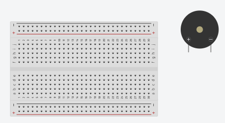
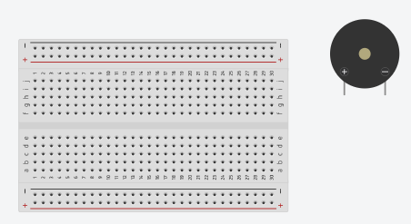
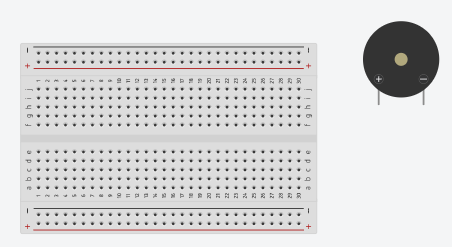
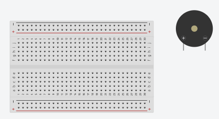
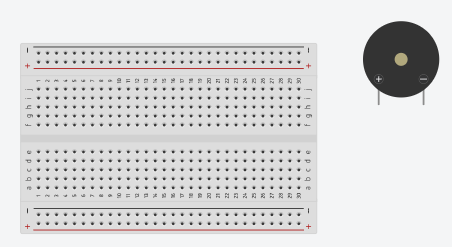

Home
Step-by-Step
Materials
Images
Materials
Materials You Will Need:
O
Small passive speaker
O
9v battery with connector
O
Aux cable with ground and signal wires
O
220 ohm resistor
O
NPN transistor
O
100uF 50v capacitor
O
Breadboard
O
Jumper wires(for breadboard)

 


